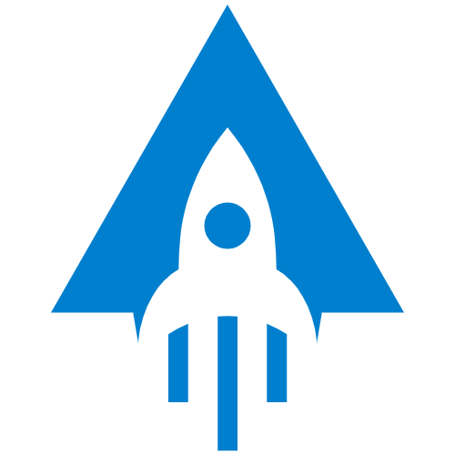
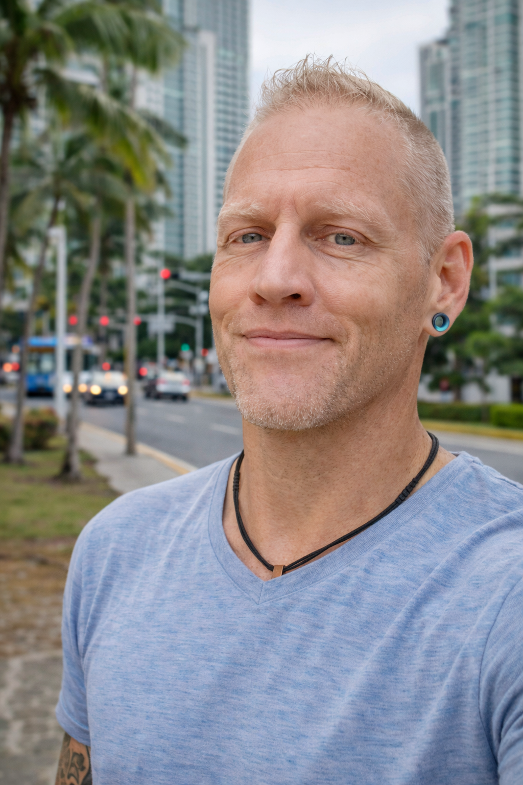

Regenerative Purpose
Clarify who the system serves, the transformation it exists to create, the boundaries that protect it, and what it refuses to become.
Regenerative Systems Architect · Regenerative AI Advocate
Everyone is talking about how to use artificial intelligence to extract more: more output, more attention, more profit, more from fewer people.
I am working on a different relationship with intelligence: co-parenting artificial intelligence with ancestral intelligence, human judgment, and living-systems wisdom.
AI that puts more back into people, places, and systems than it takes out.
A Different Story About AI
The dominant AI conversation treats intelligence like another resource to mine: automate the person, compress the relationship, capture the knowledge, increase the yield.
Regenerative AI starts somewhere else. It asks whether technology can return more capacity, agency, continuity, creativity, resilience, and shared intelligence to the system around it.
I use ancestral intelligence as a grounding counterweight: the accumulated human wisdom of relationship, reciprocity, place, consequence, stewardship, and knowing when not to optimize.
Read the Regenerative AI position →For Visionary Founders
I work with founders whose purpose is clear but whose business has outgrown the way it currently operates. The Four-Step Regenerative Systems Pathway turns a meaningful idea into something people can understand, validate, operate, and grow without stripping the life out of it.
Clarify who the system serves, the transformation it exists to create, the boundaries that protect it, and what it refuses to become.
Turn the vision into the smallest complete transformation real people can experience, value, and validate before you overbuild.
Build the roles, workflows, AI, memory, accountability, and operating rhythm that let the work function beyond the founder.
Create the customer journey, visibility, partnerships, and growth loops that expand the work without abandoning the purpose.
Three Doors
RickBroider.com is the trust layer. These are the three primary ways into the work.

Build the System
For founders whose vision has outgrown the systems holding it. Move from purpose to proof to operating architecture to market expansion.
Explore QuickLaunch →Regenerate the Intelligence Layer
AI built to strengthen the organization around it: shared memory, distributed responsibility, human review, continuity, and sovereign judgment.
Meet Saberra →Remember the Larger Story
The audiobook and body of work underneath the systems: humanity, collapse, remembrance, possibility, and what we choose to become next.
Listen / explore →You Do Not Need Another Personality Test
Founder exhaustion. Decision fog. Repeated conversations. Role confusion. Lost agreements. AI sprawl. A team that cares and still cannot hold the work.
Stop the Collapse is the diagnostic front door. It helps locate the system failure before you prescribe another tool, hire, meeting, or productivity hack.
Monthly Founder Cohort
The Regenerative Founder Lab is a live, AI-supported cohort for founders ready to get the vision out of their head and into a purpose-led offer, operating blueprint, and 30–90 day expansion plan. Three weekly live sessions, one protected integration week, and a new cohort each month.

Why Rick
Technology. Operations. Construction. Real estate. Entrepreneurship. Human transformation. Different environments, same pattern: when the architecture underneath something stops matching what it has become, people start compensating with their bodies, attention, memory, and relationships.
My work sits where regenerative purpose, practical execution, technology, human behavior, and lived experience meet. I am not interested in making people more efficient cogs in a machine. I am interested in building systems that make people more capable, more sovereign, and more connected to what matters.
“The future of AI is not only a technology question. It is a relationship question. What are we teaching intelligence to value, and what becomes stronger because it exists?”
— Rick Broider
Direct Answers
AI designed to increase the health and capacity of the system around it: more human agency, better memory, clearer judgment, more creative possibility, stronger relationships, and less unnecessary extraction.
The accumulated human intelligence of reciprocity, stewardship, consequence, relationship, place, embodiment, story, and knowing that not everything valuable should be optimized for maximum yield.
Through the Four-Step Regenerative Systems Pathway, the monthly Founder Lab, or deeper QuickLaunch implementation work depending on the stage and pressure.
Saberra is where the regenerative AI thesis becomes operational: a human-accountable AI workforce and organizational intelligence layer built around memory, continuity, roles, and distributed responsibility.
Start a Real Conversation
If there is a clean fit with QuickLaunch, Saberra, the Founder Lab, or another part of the work, I will point you there.